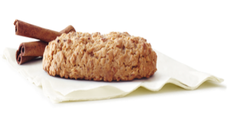

Ingredients Directions
- In a mixer bowl, cream together sugar and butter; beat in egg and vanilla.
- Combine flour, cinnamon, baking powder and salt.
- Add to butter mixture.
- Blend well.
- Cover and refrigerate 2 hours or till firm enough to roll into balls.
- Shape dough into small balls about 3/4-inch in diameter.
- Roll in cinnamon sugar to coat.
- Set cookies 1-inch apart on lightly greased cookie sheets.
- Bake at 350°F for 10 minutes or till the edges are lightly browned.
- Cool slightly on pans, then remove to racks to cool
completely.

1 cup sugar
1/2 cup butter
1 large egg
1 teaspoon vanilla
1 1/2 cups flour
1 1/2 teaspoons cinnamon
1 teaspoon baking powder
1/4 tsp. salt, cinnamon and sugar